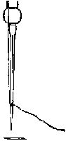
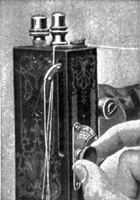
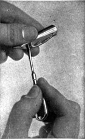

1926—The New-Way Course in Fashionable Clothes-Making
Lesson 2—Talk on Sewing Machine
Talk About the Sewing Machine
Dear Student: I want to tell you mostly about the sewing machine and then I'm going to show you a number of stitches which I hope will enjoy making.
The sewing machine plays an important part in the twentieth century method of clothes-making. It saves a tremendous amount of time. Remarkable little steel attachments that can be quickly and easily snapped into place, perform in a few minutes the work that used to take hours to do by hand. Ten yards of material transformed into the finest pin-tucks in ten minutes—and it used to take our grandmothers a full day! Shirrings, plaitings, rufflings, bindings, even braided designs can now be made right on the sewing machine with amazing rapidity.
Throughout this course you will be taught how to make use of the various attachments that came with your sewing machine in applying trimmings and giving a smart, tailored finish to the clothes you make. Do not be disturbed if you have lost or mislaid your box of attachments. Simply see your nearest sewing-machine dealer about it or write direct to the sewing machine company. Insist upon receiving a book of instructions with your box of attachments.
Always keep your sewing machine well oiled. All dust should be removed from the exposed parts at least once every week, and the important parts of the machine should be oiled twice during the week if the machine is used moderately. Use a good quality of machine oil, but only in small quantities so that it does not soil your material when you are sewing.
If your machine becomes gummed, oil it with kerosene, running unthreaded for a few minutes. Then cleanse all parts thoroughly and oil with good machine oil. This attention to your machine will prolong its life and keep it running smoothly and easily.
The Belt
Be sure that your machine belt is kept correctly adjusted. If it is too tight the machine will run very hard; if it is too loose much power will be lost.
Your machine dealer or hardware store will supply you at small cost with a belt punch which enables you to shorten the belt whenever you find it necessary to do so. With this little contrivance you can do in three minutes what would require a half-hour's waste of time ordinarily.
Placing the Needle
If you have had your sewing machine any length of time you probably know how to place the needle correctly. If it is a new machine, you can refer to your book of instructions. Always be sure that the needle is set in such a position that it does not cut the thread. To obtain the best results from your sewing machine use thread that suits the material upon which you are sewing, and see that your needle fits the thread. Do not make the mistake of using coarse thread; fine thread always gives better results.
Winding the Bobbin
One of the first things you must learn about your sewing machine is how to wind the bobbin correctly. Perhaps you already know all these primary details about your sewing machine, and if so, you can simply skip these paragraphs. But you see, we want to be so sure that not even the slightest detail is omitted that we are beginning from the very first steps.
If your bobbin is not wound smoothly and evenly there will be an uneven run of thread from the shuttle, which will undoubtedly result in uneven stitching. Your machine has an appliance on which to place the bobbin so that it can be wound quickly and easily. Learn from the instruction book you receive with your machine, or from your machine dealer, how to use this appliance—and then practice winding your bobbin until you can do it evenly, smoothly and without any trouble whatever.
Regulating Stitch
To regulate the stitch is quite a simple matter on the modern sewing machine. However, methods of adjustment vary on different types of machines, and we must refer you to the instruction book which came with your machine for exact instructions. Always use a small stitch; a coarse stitch invariably spoils work that would otherwise be most attractive.
Adjusting Tensions
Adjusting the tensions, while not a difficult task, is an important one. On all lock stitch machines there are two tensions:—one controlling the upper thread, and one the lower thread.
To loosen upper thread turn adjusting screw to the left; to tighten upper thread turn to the right. To tighten lower tension the small screw on the bobbin should be turned to the right; to loosen, turn to the left. Here again it is well to consult the instruction book which accompanied your machine as this will instruct you definitely regarding your machine.
There should be an equal amount of tension on the lower and upper threads so that the stitching will look well. A loose lower tension or a too tight upper one causes the upper thread to lie flat on the upper side of the material, while if the lower thread is too tight or the under one too loose the under thread will lie flat on the surface of the material. A perfect tension, if the thread is the proper size, locks the stitch in the center of the goods. With a perfect tension, your stitches will appear the same on both sides.